glueing lemma for an open covering
1. Satz
Seien  und
und  topologische Räume und für eine offene Überdeckung
topologische Räume und für eine offene Überdeckung  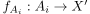 eine Familie von stetigen Abbildungen, so dass für paarweise 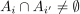 gilt:
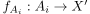 eine Familie von stetigen Abbildungen, so dass für paarweise 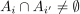 gilt:
 1
1
Dann existiert eine eindeutige, stetige Abbildung 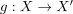, so dass gilt:
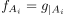
2
2. Beweis
Wir konstruieren unsere Abbildung folgendermaßen:
Sei  , so existiert insbesondere wegen ein
, so existiert insbesondere wegen ein  mit
mit  Dann sei 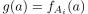.
Diese Abbildung ist linkstotal wegen und rechtseindeutig wegen der Forderung 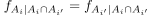
Bleibt die stetigkeit zu zeigen:
Sei 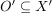 offen, so gilt für das Urbild nach Konstruktion:
Dann sei 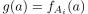.
Diese Abbildung ist linkstotal wegen und rechtseindeutig wegen der Forderung 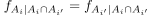
Bleibt die stetigkeit zu zeigen:
Sei 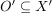 offen, so gilt für das Urbild nach Konstruktion:
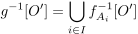
3
Dabei ist 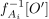 offen in  wegen der Übertragung der Offenheit von der Unterraumtopologie - schließlich ist nach Annahme offen.
Damit folgt aus der Abgeschlossenheit gegenüber Vereinigung, dass 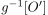 offen ist und damit
wegen der Übertragung der Offenheit von der Unterraumtopologie - schließlich ist nach Annahme offen.
Damit folgt aus der Abgeschlossenheit gegenüber Vereinigung, dass 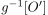 offen ist und damit  stetig
stetig